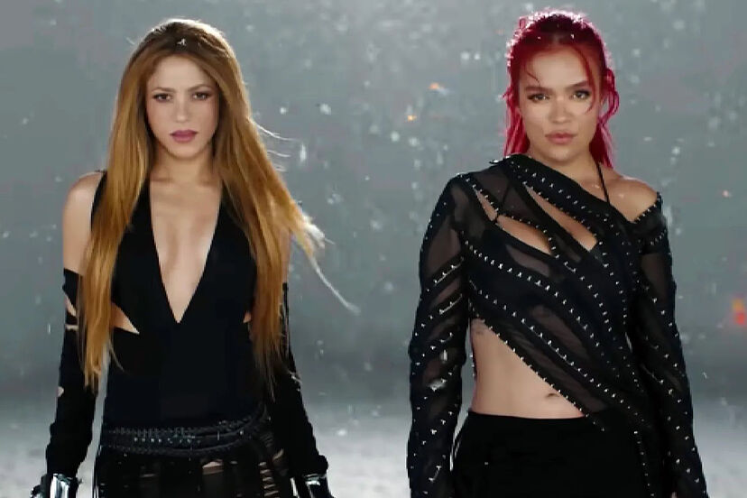
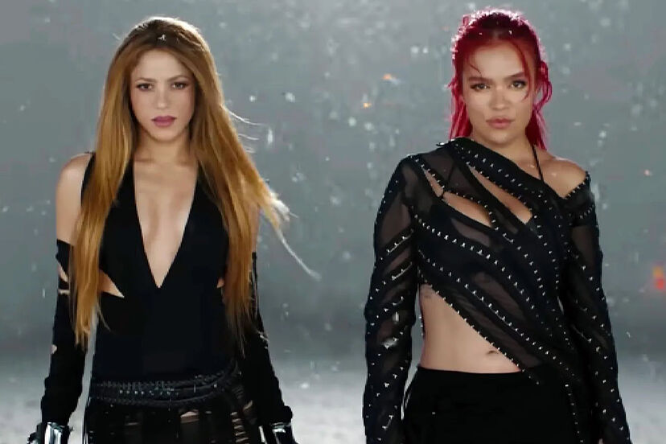

Bizarrap Music Sessions 53 con Shakira: La colombiana y el autor de hits como Quédate junto a Quevedo han cambiado las normas del juego con su Music Sessions 53 consiguiendo que, en menos de 24 horas 50 millones de personas de todo el planeta vieran su videoclip. En este temazo la artista colombiana le lanza dardos a su expareja, el futbolista Gerard Piqué y demuestra que, junto a Bizarrap, su música adquiere todavía más fuerza.

Flowers de Miley Cyrus Una canción que se ha convertido en un verdadero himno feminista de este 2023 en la que, respondiendo a un tema de Bruno Mars, Cyrus deja bien claro que las mujeres son bien capaces de cuidarse a sí mismas sin la necesidad de que ningún hombre intervenga en sus vidas.
TQG de Shakira y Karol G: Karol G invitó a Shakira a participar en TQG, uno de los hits de su nuevo álbum Mañana será bonito y el resultado ha sido un verdadero éxito internacional. Es la canción de moda y no extraña nada. Su ritmo es pegadizo y su letra, potente y contundente.

